Como usar esta página
Cada problema tem o sintoma (o que aparece na tela), a causa e a solução, com as fotos reais de quando aconteceu. As etiquetas dizem em qual console foi: meu Switchamigosobrinha.
Duas regras que evitam metade destes problemas: (1) sempre atualizar Atmosphère + Hekate antes do firmware; (2) abrir apps pesados (CNX, DBI, NXThemes) com memória completa — pelo ícone G_CAT ou segurando R ao abrir um jogo, nunca pelo Álbum.
Achar pelo código de erro
| O que aparece | Significa | Ir para |
|---|---|---|
2168-0001 / 2168-0002 + Program 010000000000100D | App aberto pelo Álbum ficou sem memória | Travou pelo Álbum |
Program 0100000000001000 | A tela inicial (tema ou menu substituto) travou | Tema depois do firmware |
Program 010041544D530000 + std::abort() + Failed to save report (0x202) | Atmosphère velho pro firmware | ams_mitm abortou |
| Hekate: Falha ao combinar warmboot com fuses | Sistema original mais novo que o CFW | Warmboot |
2002-1002 ao abrir um jogo | Instalação do jogo corrompida | Erro 2002-1002 |
| O software foi fechado porque ocorreu um erro | O jogo usado no R + jogo travou | Software fechado |
| CNX: payload precisa ter o nome payload.bin | Cartão não montado com o pacote CNX | payload.bin |
| 90DNS Tester vermelho / amarelo | Bloqueio não carregou / sem internet | Bloqueio da Nintendo |
1 · Telas de erro e travamentos
Tela de erro 2168-0001 / 2168-0002 no programa …100D
Program: 010000000000100D no meio de um download ou instalação.010000000000100D é o Álbum. Homebrew aberto pelo Álbum roda em "Modo Applet" (aviso vermelho no topo), com pouca memória. App pesado acaba a memória e trava.- Aperte POWER pra reiniciar — não estraga nada.
- Abra o app com memória completa: tocar no ícone G_CAT da tela inicial, ou segurar R e abrir qualquer jogo até aparecer o menu de homebrew.
- Confira que não aparece "Modo Applet" no topo e repita o que estava fazendo.
Se travou no meio de um download de firmware, a pasta /firmware pode estar pela metade — não abra o Daybreak antes de baixar de novo.
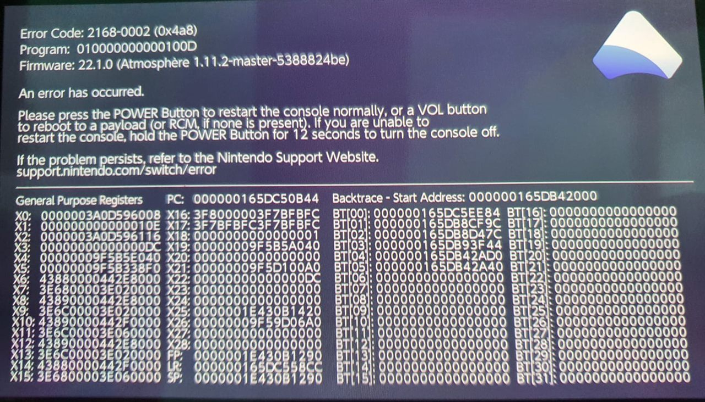
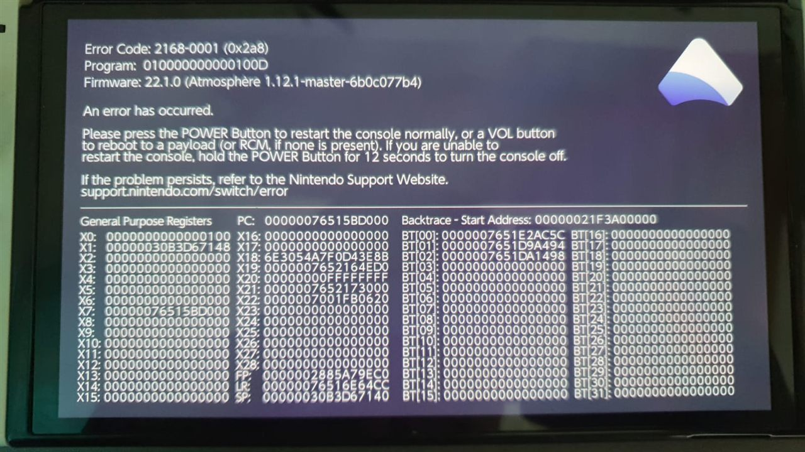
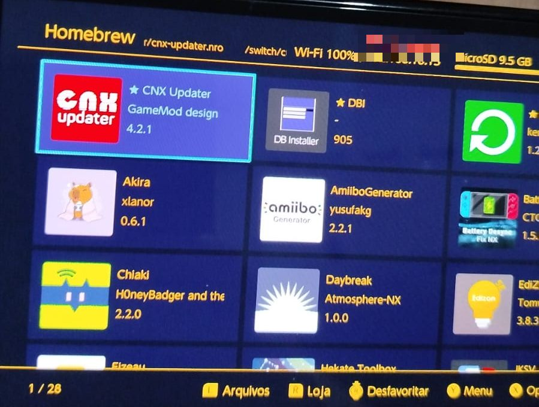
"O software foi fechado porque ocorreu um erro"
- Escolha "Não autorizar" (não manda relatório pra Nintendo).
- Use outro jogo pro R + jogo — ou o ícone G_CAT.
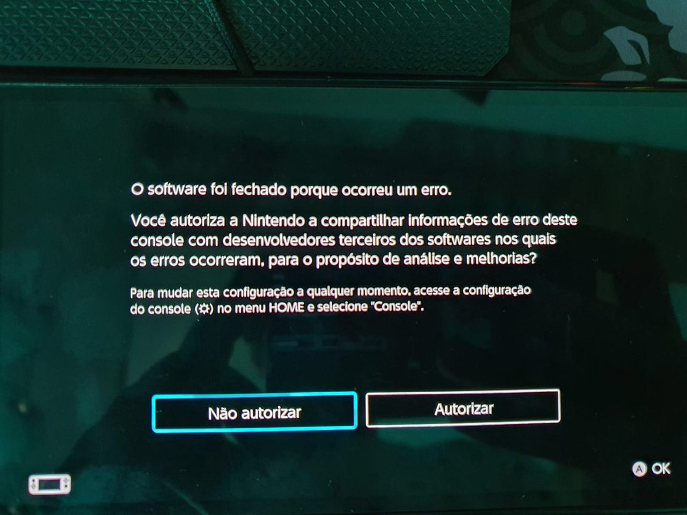
Travou ao ligar depois de atualizar o firmware — Program …1000
Program: 0100000000001000.0100000000001000 é a tela inicial. O tema (ou menu substituto) instalado foi feito pro firmware antigo e não "encaixa" no novo.- Aperte volume (não o POWER) pra cair no Hekate. Se cair no sistema original, desligue e ligue.
- Hekate → Tools → USB Tools → SD Card e, no PC, mova a pasta
atmosphere/contents/0100000000001000pra um backup. - Ligue em CFW (emuMMC) — volta com o visual padrão.
- Depois reinstale o tema pelo NXThemes 3.0.2.
Pra não acontecer: tire o tema antes de atualizar o firmware.
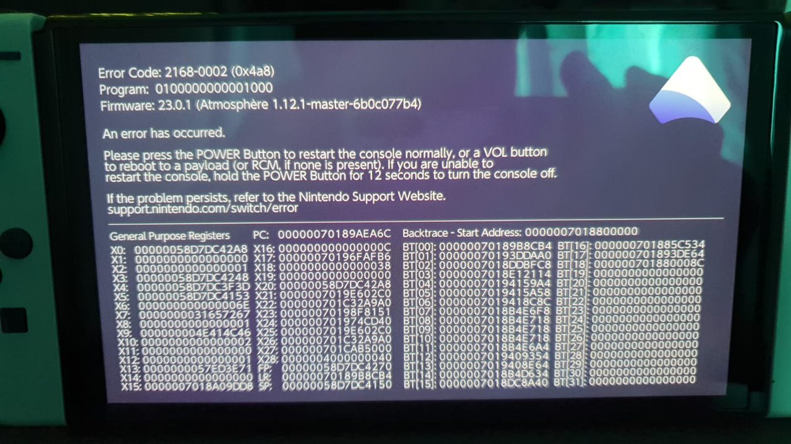
A fatal error occurred when running Atmosphère — 010041544D530000
std::abort() called (0xffe) e Failed to save report to the SD card! (00000202).010041544D530000 é um módulo do próprio Atmosphère (ams_mitm). O Atmosphère estava velho demais pro firmware. O "não salvou no SD" é consequência do travamento, não defeito do cartão.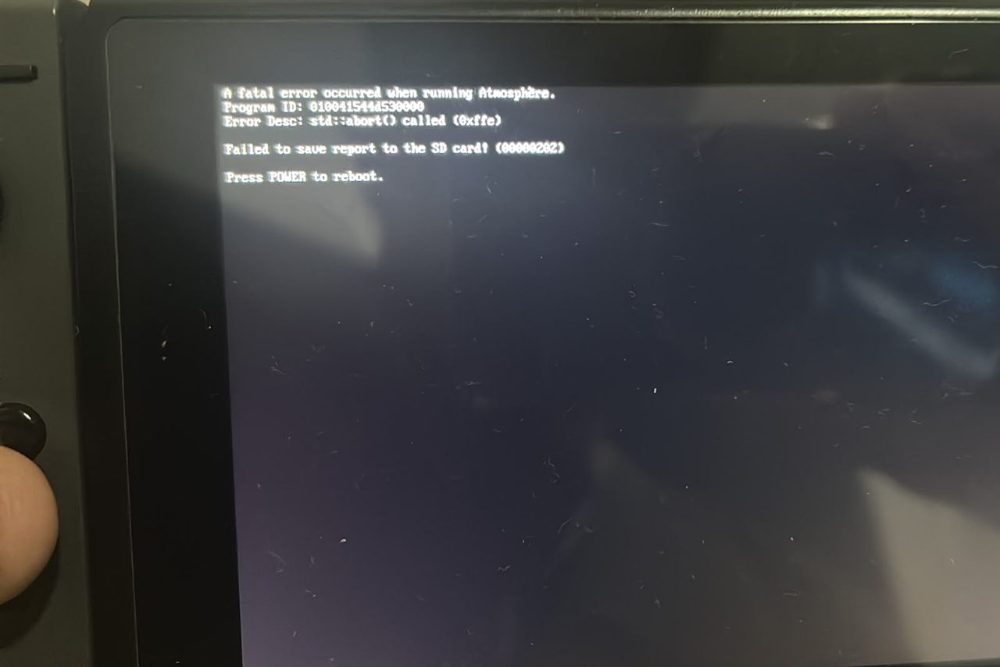
Hekate: "Falha ao combinar warmboot com fuses"
24 | 0 - HOS: Desconhecido: o Hekate 6.5.3 não conhecia essa contagem.- Enquanto não corrige: pode jogar, mas sem usar o descanso — desligar pelo menu.
- Atualizar Hekate (6.5.4) e Atmosphère (1.12.1), que conhecem o 23.0.1.
- Atualizar o firmware da emuMMC pra mesma versão do original (Daybreak).
Sempre que entrar no sistema original, deixe em modo avião: foi ele atualizar sozinho que começou o problema.
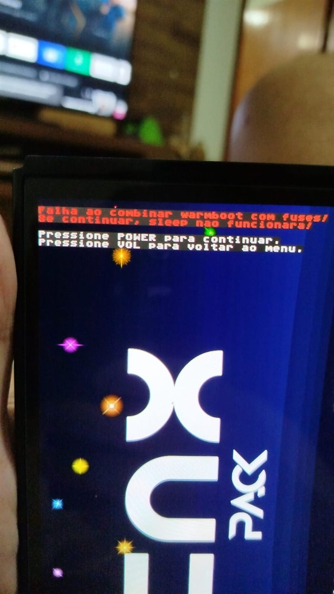
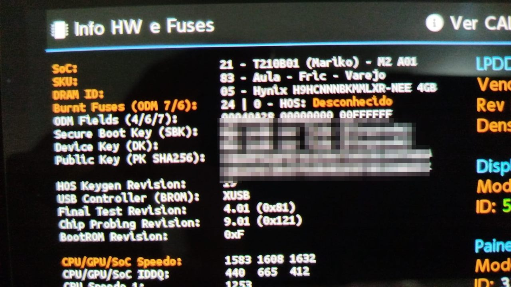
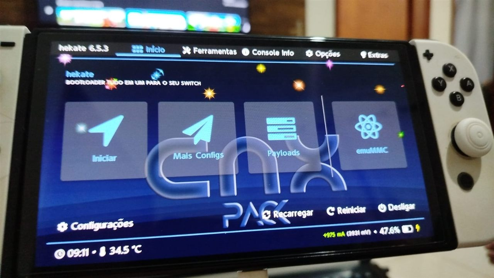
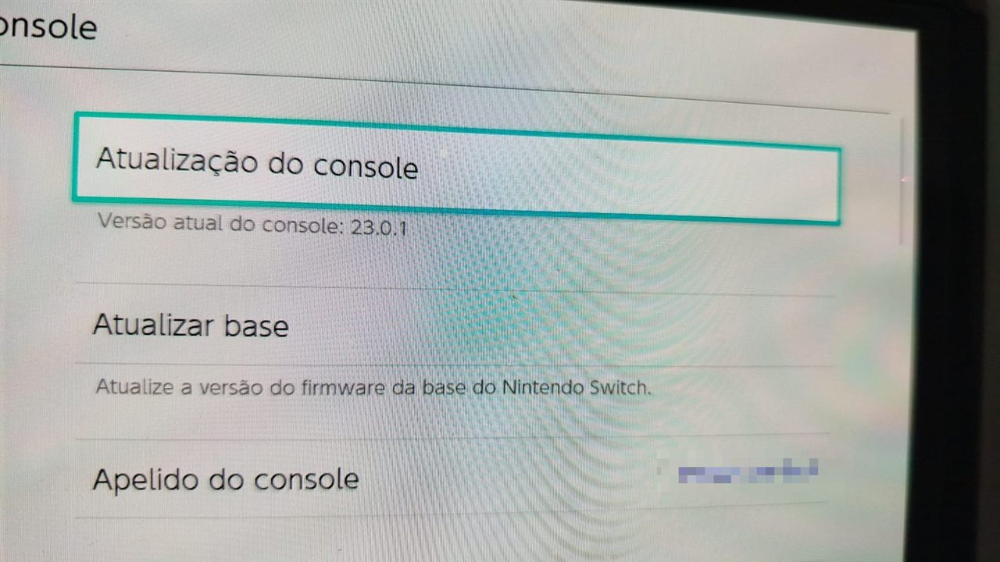
Erro 2002-1002 ao abrir um jogo (só ele)
- Configurações → Gerenciamento de dados → Gerenciar software → o jogo → Excluir software (o save fica).
- Reinstalar na ordem Base → Update → DLC, um de cada vez.
- Se voltar mesmo assim, desconfiar do microSD.
2 · Atualizar Atmosphère, Hekate e firmware
A ordem certa: Atmosphère/Hekate primeiro, firmware depois
- Atmosphère + Hekate (pelo CNX ou manual).
- Reiniciar, conferir a versão do Hekate e rodar o 90DNS Tester.
- Tirar o tema (por quê).
- Firmware: CNX → Baixar firmwares → Daybreak.
Na lista de firmwares do CNX, o "(AMS 1.12.0)" ao lado do 23.0.1 é a versão mínima do Atmosphère. Com a 1.12.1 (mais nova) funciona.
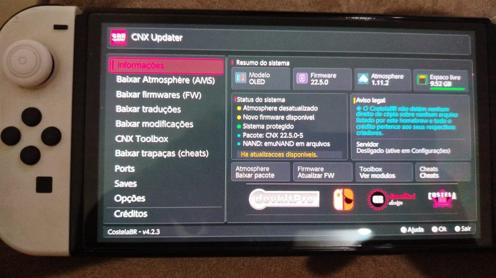
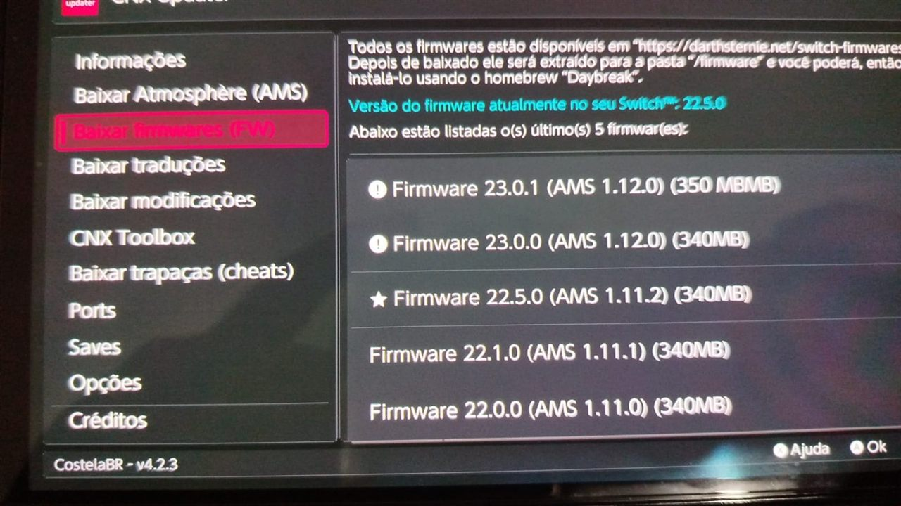
Atualizar o Atmosphère pelo CNX
- Se o CNX avisar que tem versão nova dele mesmo, pode atualizar — é só o app.
- Baixar Atmosphère (AMS) → o pacote com o firmware certo (ex.:
CNX 23.0.1-1 | AMS 1.12.1). - Na tela "Preservar arquivos", deixe tudo em [Manter] → Salvar e continuar.
- Ele reinicia sozinho e instala. Confira hekate 6.5.4 no topo.
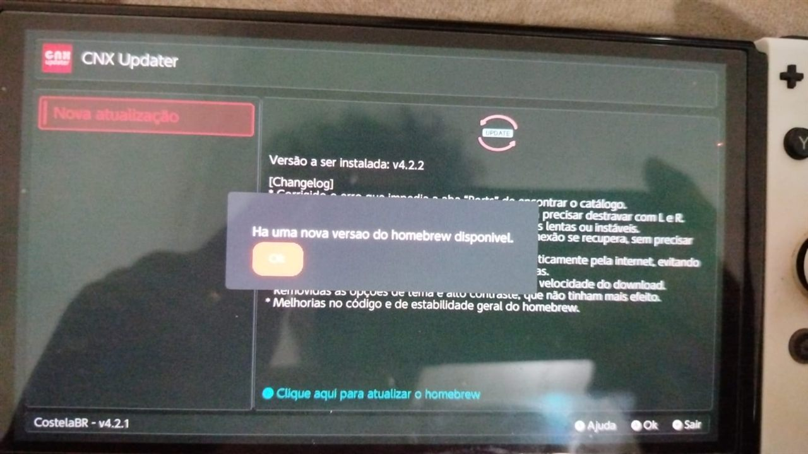
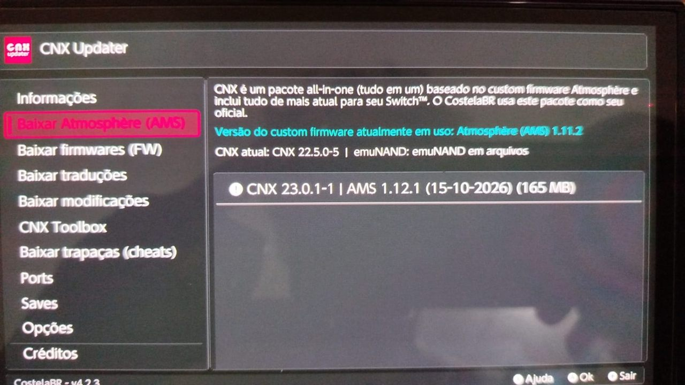
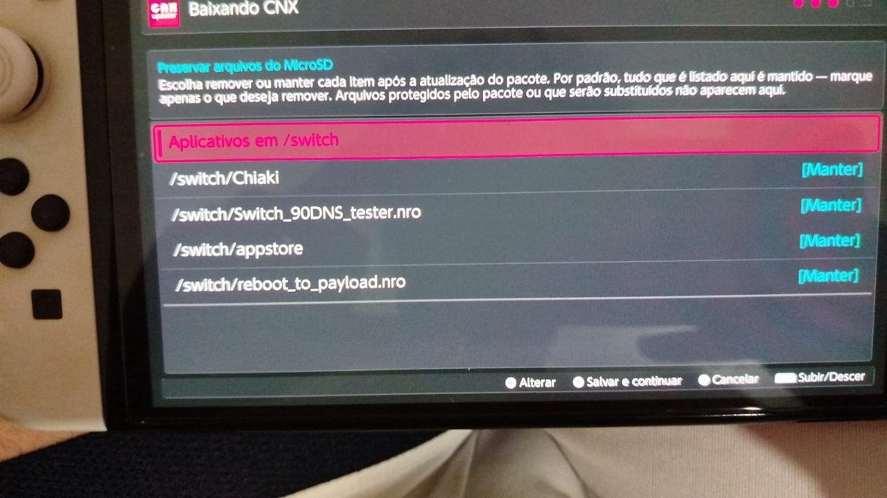
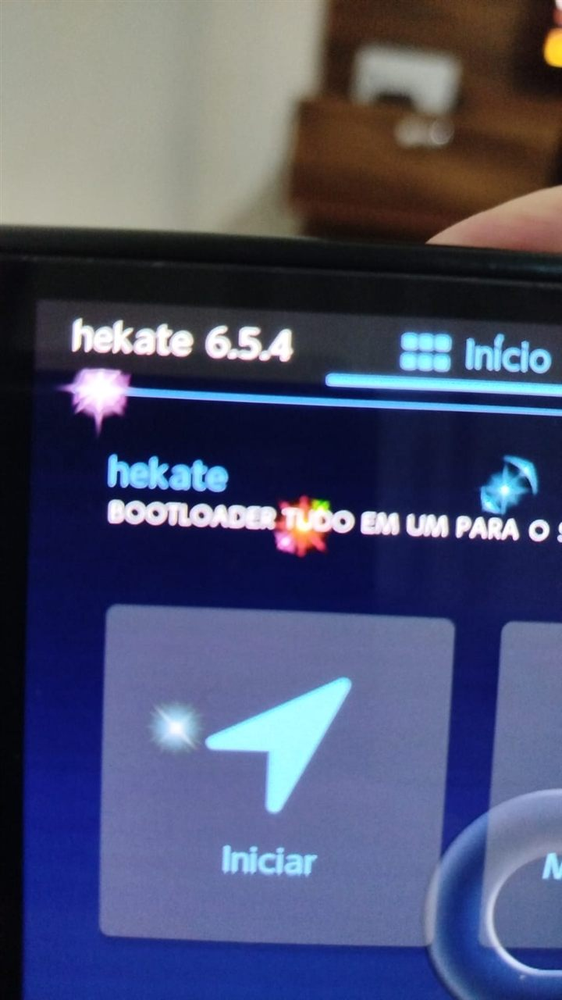
CNX não atualizou — log parou em "Extraindo pacote"
log_atualizacao.txt na raiz do cartão termina em "Extraindo pacote Atmosphère novo…" e o ams.zip ficou incompleto. O sistema não é trocado pela metade.CNX trava em "Remover e continuar" (aviso de tema)
- Remover à mão pelo USB do Hekate: mover
atmosphere/contents/0100000000001000(e…1007,…1013, se existirem) pro PC. - Abrir o CNX de novo — o aviso nem aparece.
- Se preferir manter o tema e arriscar: escolha "Continuar"; se travar depois, faça o passo a passo do …1000.
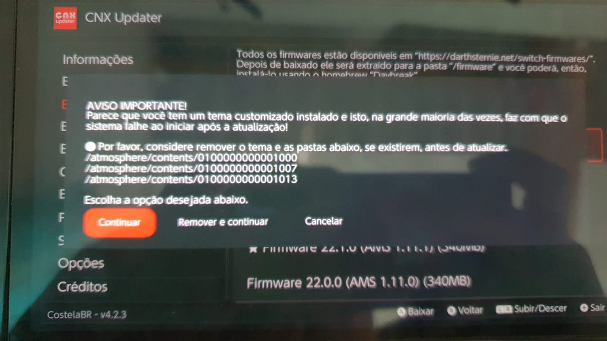
CNX: "o payload precisa ter o nome payload.bin" — atualização manual
hekate_ctcaer_6.4.2.bin e sem payload.bin). O CNX mostra "CNX atual: Indeterminado".- Baixar Atmosphère (
atmosphere-…zip+fusee.bin) e Hekate (hekate_ctcaer_…_Nyx_….zip). - Hekate → Tools → USB Tools → SD Card (o cartão vira um pendrive no PC).
- Backup de
bootloader/,payload.bin,atmosphere/(package3, stratosphere.romfs, hosts, config) e do tema. - Copiar o conteúdo dos zips por cima — menos
bootloader/res(ícones) e sem mexer emhekate_ipl.ini,atmosphere/hosts, tema. - Copiar o
hekate_ctcaer_X.bincomopayload.binna raiz e comoatmosphere/reboot_payload.bin;fusee.binna raiz e embootloader/payloads/. - Ejetar no Windows, sair do USB e ligar: conferir a versão no topo do Hekate e em Configurações → Sistema (
…|AMS 1.12.1|E).
O pacote CNX tem módulos extras. Atualizando só o Atmosphère "puro", algum módulo antigo pode não carregar — se o console travar no boot, desligue o módulo pelo USB do Hekate (tirar a pasta dele de atmosphere/contents).
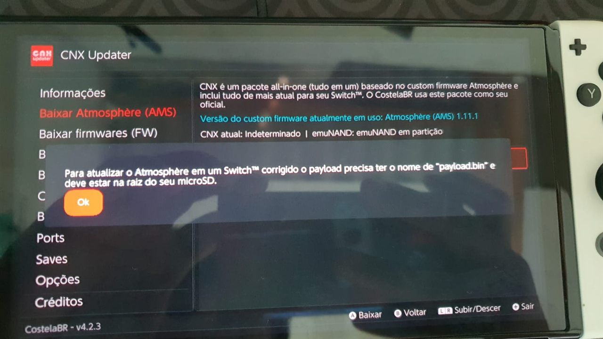
Instalar o firmware no Daybreak
- Console no carregador.
- Daybreak → Install → pasta
/firmware. - Conferir a versão nova antes de confirmar. Se aparecer a mesma versão de antes, a pasta
/firmwareé a antiga — não instale. - Preserve settings e FAT32 + exFAT.
- Não desligar no meio. No fim, reiniciar (desligar e ligar, no meu console).
Pôr o tema de volta no firmware novo
- O NXThemes Installer 3.0.2 é o que suporta o 23.0.x — e exige Atmosphère 1.12.1. A 2.9 não serve.
- Os
.nxthemecontinuam em/Themes(só sai o tema ativo). - Abrir o NXThemes com memória completa → escolher a parte (Home Menu, Lock Screen…) → Instalar → desligar e ligar.
Não copie a pasta contents/0100000000001000 antiga de volta — ela é do firmware anterior. Reinstale sempre pelo NXThemes.
3 · Bloqueio da Nintendo
90DNS Tester: verde, amarelo, vermelho
| Cor | Significa | O que fazer |
|---|---|---|
🟢 blocked | Bloqueado | Tudo certo |
🟡 unresolved | Sem resposta — quase sempre Wi-Fi desligado | Testar de novo com internet |
🔴 unblocked | Chegou na Nintendo — sem proteção | Modo avião na hora e corrigir |
depois de
copiar
atmosphere/hosts/emummc.txt) só carrega quando o console liga. Copiou e não reiniciou → vermelho. Depois de desligar e ligar, ficou verde.sem o tester
atmosphere/logs/dns_mitm_startup.log. Tem que ter "Selected /hosts/emummc.txt" e a lista (*nintendo.*, …).emummc.txtvale no CFW (emuMMC);default.txtnas outras opções. Se odefault.txtsó tem a telemetria, a opção "SysNAND CFW" do Hekate fica sem bloqueio.- O sistema original (Stock) nunca tem bloqueio: sempre em modo avião.
- O pacote CNX já traz um
emummc.txtcom127.0.0.1 *nintendo*— conferir com o tester mesmo assim.
Dá pra jogar em dupla com dois Switch?
- Sem fio local / LAN (console fala direto com console): funciona com o bloqueio ligado e não passa pela Nintendo.
- Online: passa pelos servidores da Nintendo — o bloqueio corta, e com CFW é caminho de ban. Mesmo os dois na mesma casa.
- Ex.: Core Keeper no Switch é só online (local = 1 jogador) → não dá em dupla com segurança.
4 · Transferência e instalação (MTP / USB)
Instalar por MTP: o que entra e o que não entra
- A pasta Install do DBI só aceita
NSP,NSZ,XCI,XCZ..rarnão instala: extraia antes. - DLC e Update precisam do jogo base instalado.
- Se o DBI disse que instalou mas a janela de cópia do PC ficou travada: pode cancelar no PC.
- A pasta "Games" do MTP não atualiza enquanto a sessão está aberta — confira na tela do Switch.
- Se o envio não começa: B no DBI, tirar o cabo, abrir de novo e reconectar.
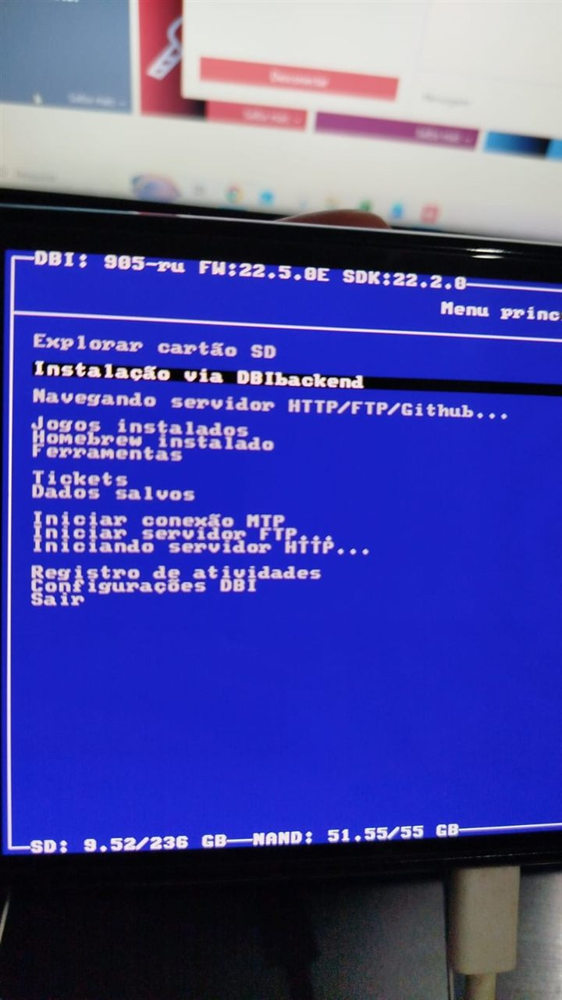
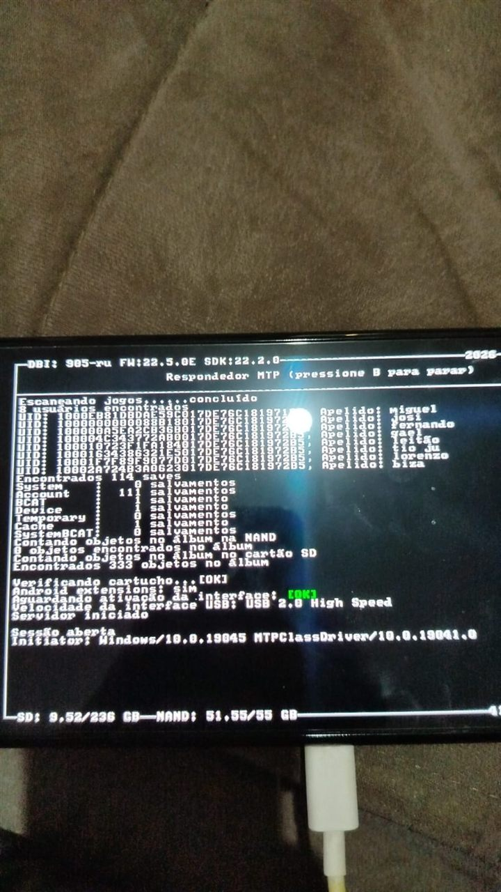
MTP não substitui arquivo — use o USB do Hekate
"Memória do sistema" quase cheia no CFW
A memória do sistema que aparece no CFW é a da emuMMC — separada do sistema original. Ela começou como cópia do original e soma tudo que foi instalado nela. Pra liberar: Configurações → Gerenciamento de dados → Mover dados entre sistema e microSD.
5 · Chip, boot e hardware
Reiniciou e abriu o sistema original
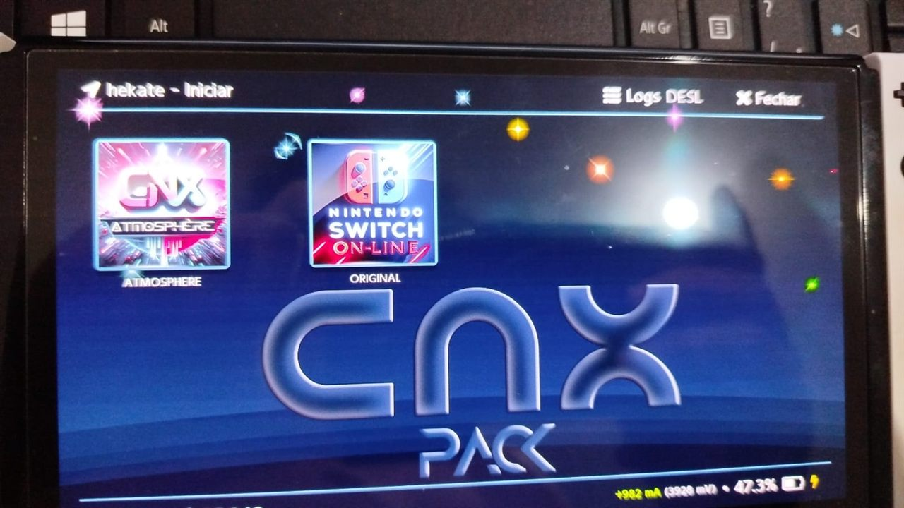
Cai no original mesmo desligando e ligando
provável
** antes).- Teste: quando falhar, esperar 15–20 min fora do dock. Voltou? É calor.
- Ver o código do LED do chip quando falha — ele diz qual ponto (DAT0, RST, CMD…).
- DAT0 → a ligação permanente ("método kamikaze") costuma resolver; RST → refazer o fio. Os dois são solda fina perto da memória: com quem tem prática.
Joy-Con esquerdo não é reconhecido encaixado
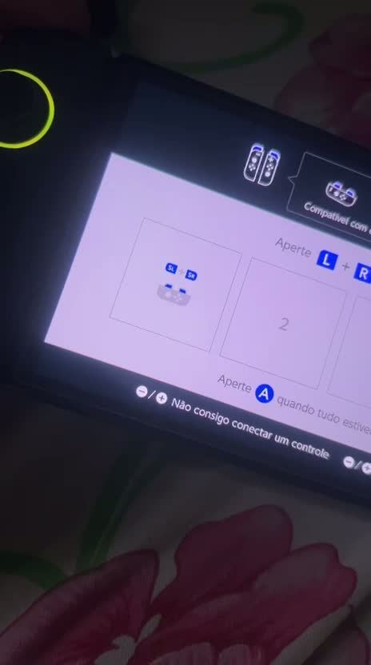
6 · Outros
Emulador no celular: "Sua ROM está encriptada"
O emulador não tem as chaves pra abrir o jogo. Causas: prod.keys não instalado, chaves de firmware antigo demais pro jogo, falta do title.keys, ou abrir o arquivo de Update/DLC em vez do Base. As chaves vêm do próprio Switch (Lockpick_RCM pelo Hekate) — nunca usar as de outra pessoa: elas identificam o console.
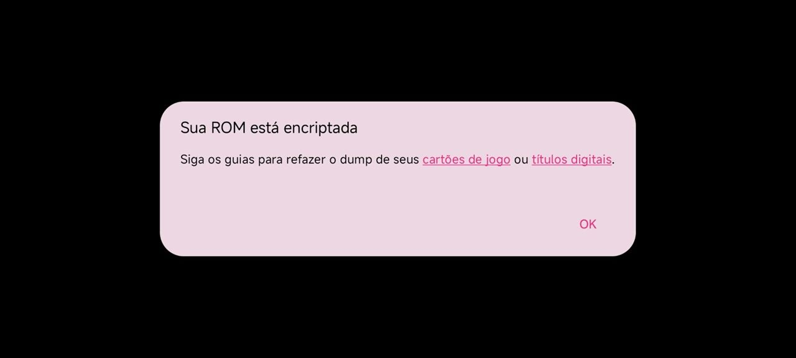
Ícone G_CAT: homebrew com memória completa
App nosso (/switch/gcat-launcher/gcat-launcher.nro) que abre o sphaira em modo completo. No sphaira: selecionar G_CAT → X → Install Forwarder. O ícone na tela inicial substitui o R + jogo e acaba com os travamentos do Álbum.